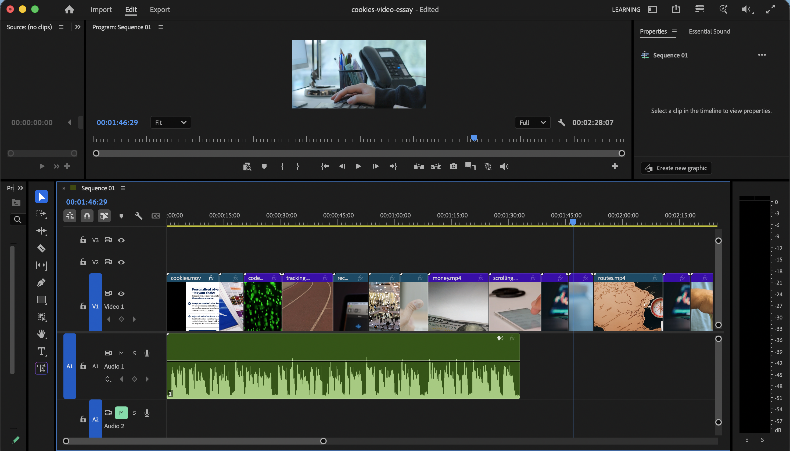

Prototypes
Task for Week 9
Write a simple citizenship statement (50–100 words). What are the social and community contexts of your work, and discipline more broadly? How are you addressing them? Are you speaking to a particular audience? Are there any ethical, social or moral responsibilities in doing so? And if so, how, what are you doing to handle your responsibilities with care and sensitivity? What considerations are you taking into account in your project to make it useable, accessible and useful?
My video essay explores the ethics around digital consent and data tracking, aiming to unearth the truth behind deceptive design in cookie consent banners. By using meaningful visuals and an informative narration style, I have aimed my project at general internet users, particularly younger audiences, who frequently encounter consent pop-ups but may not fully consider their implications.
I have approached this topic with a focus on clarity and accessibility, using simple language and visual examples to explain complex ideas. Ethically, I aim to inform rather than alarm, presenting information in a balanced way. I have also considered usability by ensuring the content is engaging, easy to follow, and visually supportive of the key messages.

My work didn't have many prototypes, it came together easily. After recording myself talking through the script, I tracked each video clip to where the key word was in the recording and followed this process until the final visual essay was complete.
The only key iteration to note was that originally there was no background sound on the first export, but I soon adapted this when hearing how empty the recording sounded. Details of my background sound choice can be found here.